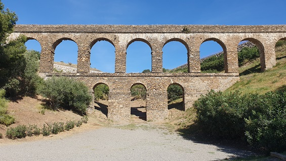
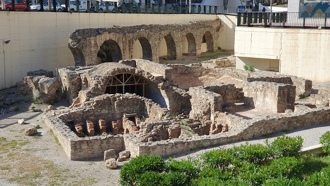
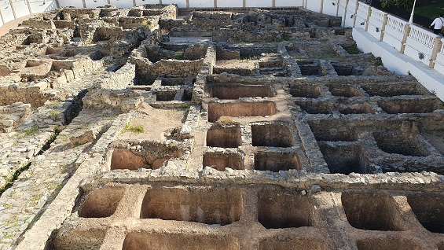

ALMUÑECAR
"SEXI
FIRMUM IULIUM"
Almuñécar
prácticamente desde siempre ha estado poblada. A finales del siglo IX a.e.c,
sus pobladores recibieron la
colonización fenicia y se crearon las estructuras urbanas de la colonia de.
Cuando a finales del siglo III a.e.c llegaron los romanos, se
encontraron con una ciudad bien estructurada, con una pujante economía basada en
la salazón de pescado y con ceca propia.
Los romanos remodelaron su nueva ciudad y la denominaron
Sexi Firmum Iulium, dotándola
de
templos, teatro, acueducto y
edificios propios del municipio de derecho latino.
En la actualidad se
conservan gran cantidad de vestigios de la época romana.
Acueducto Romano
El acueducto supuestamente fue construido en el siglo I y reutilizado
posteriormente en el sistema de acequias árabe. Aun hoy en día
alguno de sus tramos siguen siendo utilizados en el sistema de
regadíos tradicional. El tramo a la vista de mayor altura se
encuentra junto al cauce del río Verde, a la altura del barrio de Torrecuevas.

Ver
Acueductos romanos
|
| |
Acueducto y Termas
De finales de los 90 hasta el año 2002 se excavó y restauró
un nuevo tramo del acueducto romano, que viene a sumarse
a los ya existentes en el barrio de Torrecuevas y Río Seco. Se trata
del tramo situado en la denominada plaza Mayor, junto a la Carrera
de la Concepción. Este acueducto trasladaba el agua para la ciudad y
la factoría de salazones situada en el parque El Majuelo. En la
excavación también vieron las luz unas termas romanas y otros
elementos funerarios de origen romano de la misma época.

Ver
Termas romanas |
| |
Cueva de Siete Palacios
Una de las manifestaciones urbanísticas más importantes es sin duda el conjunto de bóvedas que rodean el
cerro de San Miguel, destacando especialmente el complejo abovedado
denominado popularmente Cueva de Siete Palacios, y que en la
actualidad alberga al Museo Arqueológico Municipal.
|
| |
Castillo de San Miguel
La fortaleza pudo ser construida en época fenicia o púnica,
pero hasta el momento actual no se han hallado estructuras de dicha
cultura, aunque sí fragmentos cerámicos.
Se puede afirmar que fue fortaleza romana, habiéndose encontrado
restos que así lo confirman. Bajo los restos de la casa palacio, las
excavaciones han revelado unas estructuras romanas; muros,
pavimentos, una cisterna y una pequeña necrópolis del Bajo Imperio.
En la fachada Oeste se han hallado restos de una puerta y muralla
romana, apareciendo detrás de ambas sendas piletas o pequeñas
cisternas. |
| |
La Torre del Monje
Está datada en el siglo I y se corresponde con un columbario
o panteón funerario. Es de planta cuadrada y cerrada al exterior,
dentro dispone de unas hornacinas, donde se colocaban las urnas con
las cenizas del difunto. Se encuentra a 2km de Almuñécar por la
carretera de Jete. |
| |
Columbario La Albina
Construido a fines del siglo I a.e.c, los restos de este
columbario se encuentran en una loma sobre la vertiente este del río
Verde, cerca de la carretera de Almuñécar a Salobreña. En su
interior hallamos tres filas de tres nichos formados por pequeñas
dovelas de piedra casi sin labrar. |
| |
Fábrica de Salazón
Una de las industrias con más importancia que tuvo el
imperio romano. Almuñécar, hacia finales del siglo V a.e.c. o
principios del siglo IV a.e.c., fundamenta básicamente su economía
en esta industria que adquirirá ampliamente fama en todo el imperio.
Factoría de la Seks púnica y la Sexi romana.

|
GRANADA ROMANA
|